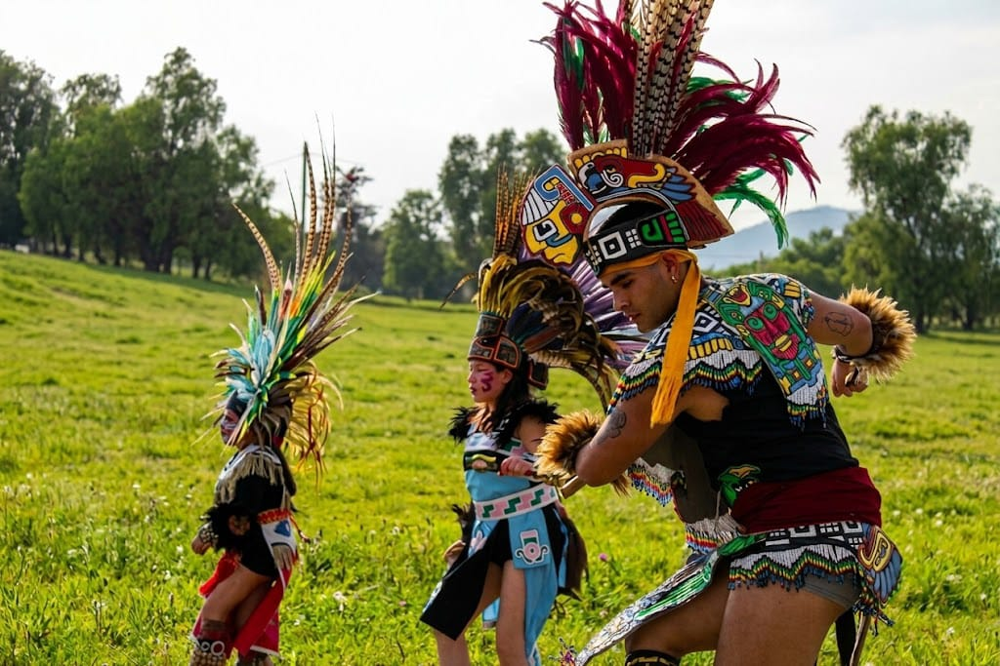

JUE
TlashkoJuego de pelota
Cancha monumental inaugurada en 2018, ideal como pieza visual principal.
Valle de Teotihuacan
Seccion enfocada en preservacion cultural, ceremonialidad, formacion artistica, pedagogia comunitaria y mediacion turistica-cultural en Teotihuacan.

Resumen
El centro se vincula con comunidades de pueblos alrededor de Teotihuacan y se enfoca en danza, ceremonias, museo tolteca, juego de pelota, educacion cultural y recorridos.
Su sede publica mas consistente apunta a San Sebastian Xolalpa / San Juan Teotihuacan, Estado de Mexico.
Cancha monumental inaugurada en 2018, ideal como pieza visual principal.
Bendicion de semillas, Dia de la Tierra, danza ritual, tambor y flauta.
Museo tolteca y recorridos de conocimiento ecologico-cultural.
Contenido basado en el informe analitico.
Texto de apoyo para revisar jerarquia, ritmo y lectura.
Dato contextual extraido del informe.
Dato contextual del informe.
Evidencia documental por integrar.
Desarrollo ampliado para explicar contexto, territorio, programa, publico beneficiado y evidencia visual sugerida.
Este bloque sirve para probar una version final con lectura continua, imagenes documentales y jerarquia editorial.